pacman::p_load(tmap, sf, tidyverse, sfdep, knitr, Hmisc, mapview, DT)Take-home 2 - Applied Spatial Interaction Models: A case study of Singapore public bus commuter flows
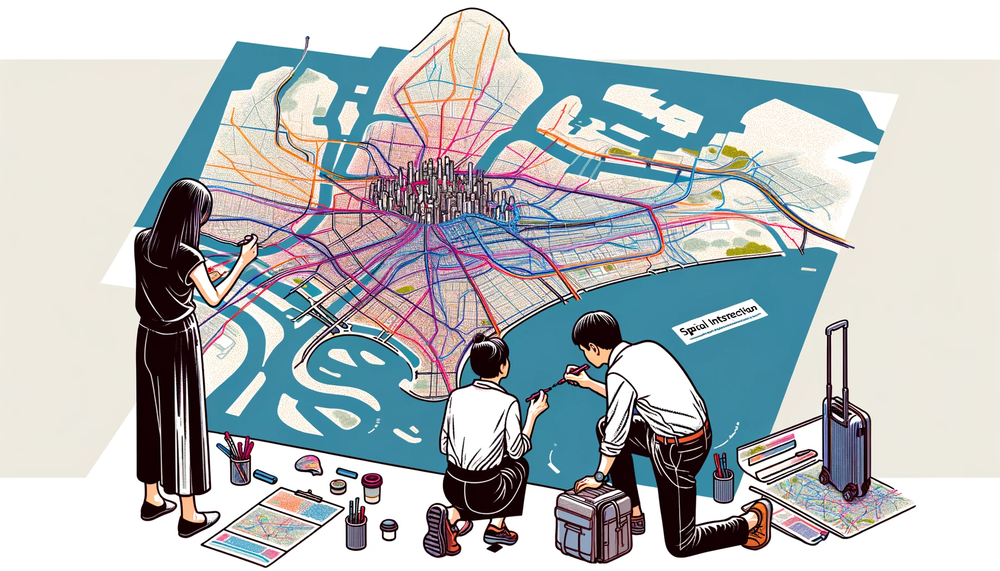
1 Overview
Understanding why city residents wake up early to travel from home to work and assessing the consequences of discontinuing a public bus service along a specific route are key challenges faced by transport operators and urban managers in the realm of urban mobility. Traditionally, answering such questions relied on expensive, time-consuming commuter surveys. However, these surveys not only demanded considerable resources but also yielded data that took a substantial amount of time to clean and analyze, often rendering it outdated by the time reports were ready.
In today’s digital era, urban infrastructures, including public buses and mass rapid transits, are becoming increasingly digital. The proliferation of technologies like GPS on vehicles and SMART cards for public transport users generates vast geospatial data sets, offering insights into movement patterns over time and space. Despite this wealth of data, planners struggle to effectively leverage and transform it into valuable information, impacting the return on investment in data collection and management.
To address this gap, this exercise conducts a case study showcasing the potential of Geographic Information System and Spatial Data Analysis (GDSA). By integrating data from various sources, this approach aims to build spatial interaction models that unveil the factors influencing urban mobility patterns in the context of public bus transit.
This task aims to achieve specific goals, focusing on General Geospatial Data Science and Spatial Interaction Modeling.
For the General Geospatial Data Science, the aim is to do the following: - Create a detailed hexagon map (375m distance from center to edges) representing Traffic Analysis Zones (TAZ). - Various time will have different pattern of traffic flow. For this study, the focus is on the period of weekday morning peak from 6am to 9am. - Develop an Origin-Destination (O-D) matrix illustrating commuter flows during the chosen time interval. - Visualize passenger trip flows using geospatial methods, analyzing the observed spatial patterns. - Gather relevant data, both spatial and aspatial, from publicly available sources. - Generate a distance matrix based on the earlier derived hexagon data.
is 375m a magical number?
Studies have found that people are usually willing to walk approximately 750 meters to get to public transportation. A more specific comfortable walking distance that takes into account the local weather and how cities are laid out.
When planning city maps and deciding where to place public transport stops, we use hexagons to represent areas on the map. Why hexagons? They fit together perfectly without wasting any space, which makes them great for dividing the map into zones. To match the 750-meter walking distance, each hexagon is sized so that the distance from the center to any edge is half that distance, which is 375 meters. This ensures that anyone within the hexagon is no more than a 750-meter walk away from the center, where a public transport stop would be ideally located. This method is a smart way to make sure that everyone has easy access to transport within a reasonable walking distance.
summarized from: Daniels & Mulley, Dhuri, Sekste & Kazakov, and in-class explanation from Prof Kam Tin Seong
what is Traffic Analysis Zones (TAZ)?
A Traffic Analysis Zone (TAZ) is a way of dividing a city into smaller areas for transportation planning. Each TAZ has some information about the people and places in it, such as how many people live there, how many cars they have, and where they work or go to school. These information help planners understand how people travel and what kind of transportation they need.
Some key points about TAZs are:
The size and shape of a TAZ can vary depending on the location and the purpose of the study. For example, a TAZ in a downtown area might be smaller and more regular than a TAZ in a rural area.
The choice of a TAZ system is very important because it affects the accuracy and usefulness of the transportation models. A good TAZ system should reflect the reality of the travel patterns and demands in the city.
AZs are not fixed and can be changed or updated over time to reflect new data or changes in the city. However, changing TAZs can also cause some problems, such as losing historical data or making comparisons difficult.
Summarized from: Miller, 2021
what is Origin-Destination (O-D) matrix?
An Origin-Destination (O-D) matrix is a way of showing how many trips are made from one place to another in a given area. For example, an O-D matrix can tell us how many people travel from their home to their work, or from their hotel to a tourist attraction, or from one city to another. An O-D matrix can help us understand the travel patterns and demands of people, and plan for better transportation systems.
An O-D matrix usually looks like a table, where the rows represent the origins (where the trips start) and the columns represent the destinations (where the trips end). Each cell in the table shows the number of trips between a specific origin and destination. Sometimes, the table can also include other information, such as the mode of transportation (car, bus, bike, etc.), the time of the day, or the purpose of the trip.
Here is an example of a simple O-D matrix for a city with four zones (A, B, C, and D):
| A | B | C | D | Total | |
|---|---|---|---|---|---|
| A | 0 | 10 | 5 | 15 | 30 |
| B | 20 | 0 | 10 | 10 | 40 |
| C | 10 | 15 | 0 | 5 | 30 |
| D | 5 | 5 | 5 | 0 | 15 |
| Total | 35 | 30 | 20 | 30 | 115 |
This table tells us that there are 115 trips in total in the city, and that the most common origin-destination pair is A-D, with 15 trips. It also tells us that no one travels within the same zone (the diagonal cells are zero).
An O-D matrix can be created from different sources of data, such as surveys, GPS, mobile phones, or social media. Depending on the data source, the level of detail and accuracy of the O-D matrix can vary. For example, a survey might ask people to report their exact home and work locations, while a GPS device might only record the coordinates of the start and end points of a trip. Therefore, different methods and techniques are needed to process and analyze the data, and to convert them into a meaningful O-D matrix.
Summarized From: Coşkun, et al., 2020
what is trip flows?
Trip flows are the movements of people or things from one place to another in a given area. For example, trip flows can show how many people travel from their home to their work, or from one city to another, or from one country to another. Trip flows can help us understand the patterns and reasons of these movements, and how they affect the environment, the economy, and the society.
Summarized from: Tao Ran, 2021
spatial vs aspatial data
Spatial data is data that has a geographic or spatial component, meaning that it is related to a specific location on the Earth’s surface. For example, the coordinates of a city, the shape of a lake, or the population density of a region are all spatial data. Spatial data can be represented using maps, graphs, or statistics, and can be analyzed using Geographic Information Systems (GIS).
Aspatial data is data that does not have a direct connection to a specific location. For example, the name of a person, the color of a car, or the price of a product are all aspatial data. Aspatial data can be represented using tables, charts, or text, and can be analyzed using various methods such as arithmetic, logic, or statistics.
The main difference between spatial and aspatial data is that spatial data can show the spatial relationships and patterns of the data, such as distance, direction, or proximity, while aspatial data cannot. Spatial data can also be combined with aspatial data to provide more information and insights. For example, a map of a city can show both the spatial data (the location and shape of the buildings) and the aspatial data (the name and use of the buildings).
Summarized from: Cengel
what is distance matrix?
A distance matrix is a way of showing how far away different places are from each other in a given area. For example, a distance matrix can tell us how many kilometers or minutes it takes to travel from one city to another by car, bus, or bike. Applying geospatial analytics on distance matrix can help us understand the patterns and reasons of these movements, and how they affect the environment, the economy, and the society. dive deeper at (ArcGIS)[https://pro.arcgis.com/en/pro-app/latest/tool-reference/spatial-analyst/distance-analysis.htm]
For the General Spatial Interaction Model, the aim is to do the following:
Adjust spatial interaction models to identify factors influencing urban commuting during the specified time.
Present modeling results using suitable geovisualization and graphical methods.
Interpret the outcomes to gain insights into the factors impacting commuting flows in the urban landscape during the selected time frame.
what is spatial interaction model?
A spatial interaction model is a way of describing how people or things move from one place to another in a given area. For example, a spatial interaction model can show how many people commute from their home to their work, or how many goods are traded between different cities or countries. A spatial interaction model can help us understand the patterns and reasons of these movements, and how they affect the environment, the economy, and the society.
One of the most common spatial interaction models is the gravity model, which is based on an analogy to the physical law of gravity. The gravity model assumes that the movement between two places is proportional to their size (such as population or income) and inversely proportional to their distance. The gravity model can be written as:
\[T_{ij} = k \frac{v_i^{\lambda} w_j^{\alpha}}{d_{ij}^{\beta}}\]
where \(T_{ij}\) is the movement from place \(i\) to place \(j\), \(v_i\) is the propulsiveness factor from the origin(\(i\)) place,\(w_j\) is the attractiveness factor from the destination (\(j\)), and \(d_{ij}\) is the distance between the two places. \(k\) is a constant model parameter, while \(\lambda\), \(\alpha\), and \(\beta\) are parameters that measures the effect of their respective variables.
There are other types of spatial interaction models, such as the potential model and retail model, which have different assumptions and formulations. These models can be used to explain different kinds of movements, such as migration, tourism, or disease spread.
References: Kam Tin Seong and Spatial interaction models with R
The spatial interaction models being used in this task are the variants of Gravity Model including Unconstrained, Origin Constrained, Destination Constrained, and Doubly Constraint. The models’ performance will be compared to see which one is more appropriate to use in the modelling.
What is Unconstrained Gravity Model?
The Unconstrained Gravity Model is a simple form of the gravity model where the principle of conservation is ignored. This means that the interaction between two locations is not limited by the total number of interactions at the origin or destination. In this model, the interaction between two locations is a constant scaling factor, independent of all origins and destinations.
What is Origin Constrained Gravity Model?
The Origin/Production Constrained Gravity Model, also known as the production constrained model, includes origin-specific balancing factors that act as constraints. These constraints ensure that the estimated rows of the flow data matrix sum to the observed row totals. In other words, the total number of interactions originating from a location is fixed, and the model distributes these interactions across various destinations.
What is Destination Constrained Gravity Model?
The Destination/Attraction Constrained Gravity Model, also known as the attraction constrained model, includes destination-specific balancing factors that act as constraints. These constraints ensure that the estimated columns of the flow data matrix sum to the observed column totals. This means that the total number of interactions attracted to a location is fixed, and the model distributes these interactions across various origins.
What is Doubly Constrained Gravity Model?
The Doubly Constrained Gravity Model includes both origin and destination-specific balancing factors that act as constraints. These constraints ensure that the estimated rows and columns of the flow data matrix sum to the observed row and column totals. In other words, both the total number of interactions originating from a location and attracted to a location are fixed.
To dive deeper on these models, explanation can be found on research by Haynes & Fotheringham, 1985 and class materials by Prof Kam Tin Seong
the content of the following panel explained what aspatial and geospatial data are used in this project.
October 2023 Period
downloaded from LTA DataMall - Dynamic Dataset via API
csvformat.Columns/Fields in the dataset includes YEAR_MONTH, DAY_TYPE, TIME_PER_HOUR, PT_TYPE, ORIGIN_PT_CODE, DESTINATION_PT_CODE, and TOTAL_TRIPS.
metadata
YEAR_MONTH: Represent year and Month in which the data is collected. Since it is a monthly data frame, only one unique value exist in each data frame.
DAY_TYPE: Represent type of the day which classified as weekdays or weekends/holidays.
TIME_PER_HOUR: Hour which the passenger trip is based on, in intervals from 0 to 23 hours.
PT_TYPE: Type of public transport, Since it is bus data sets, only one unique value exist in each data frame (i.e. bus)
ORIGIN_PT_CODE: ID of origin bus stop
DESTINATION_PT_CODE: ID of destination bus stop
TOTAL_TRIPS: Number of trips which represent passenger volumes
Tutorial on Fetching the Data
Click this link, and click the
Request for API Access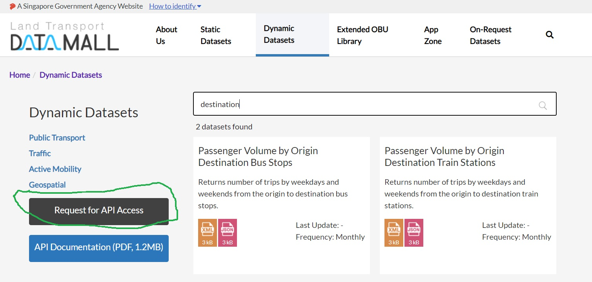Fill in the required form 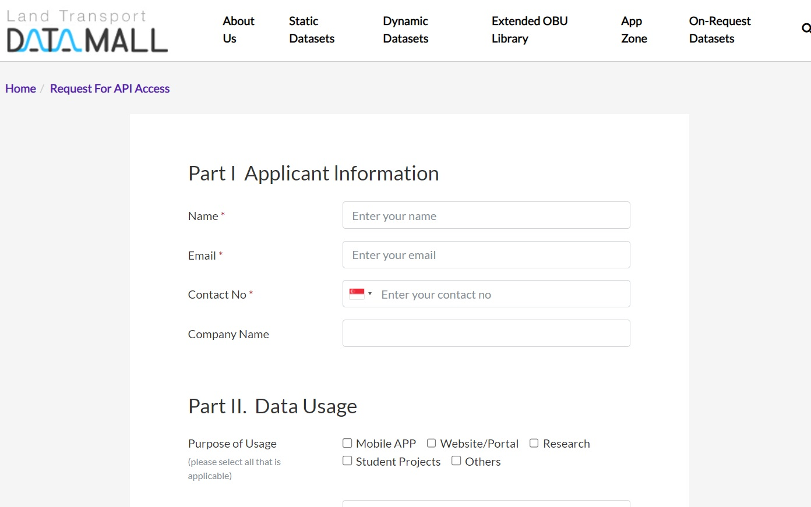
Check email for confirmation. The
API Account Keywill be required for later step. 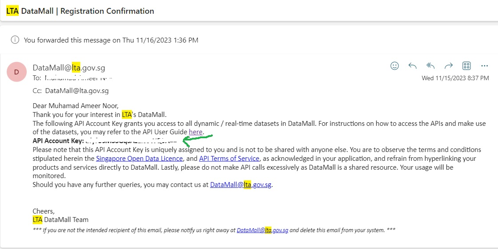The user guide from LTA here will explains how to make API calls. The user guide also provide the link required for various kind of dataset, keep the link for future use. 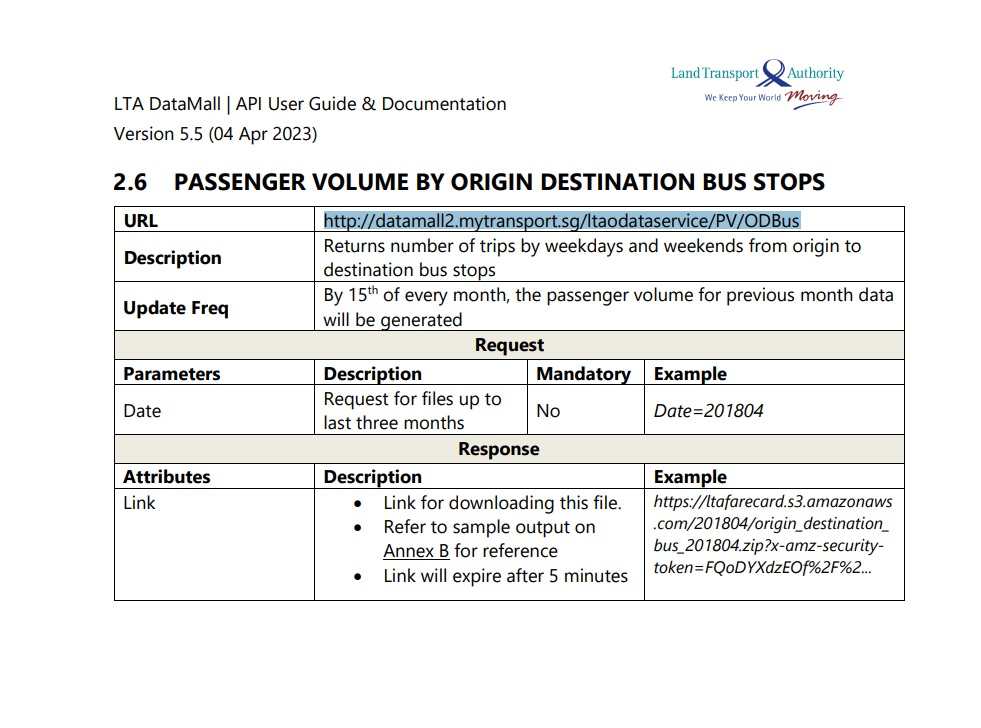
The following step assume usage of desktop apps version of
Postmanto make the API call. Firstly, go to Postman and click on the logo of the OS system that you are using. 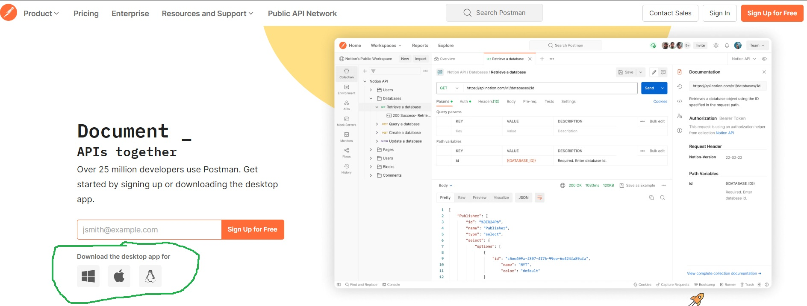The following step is for Windows User, adjust accordingly if you use other OS. Click on the dowload button, install the apps, and launch it. 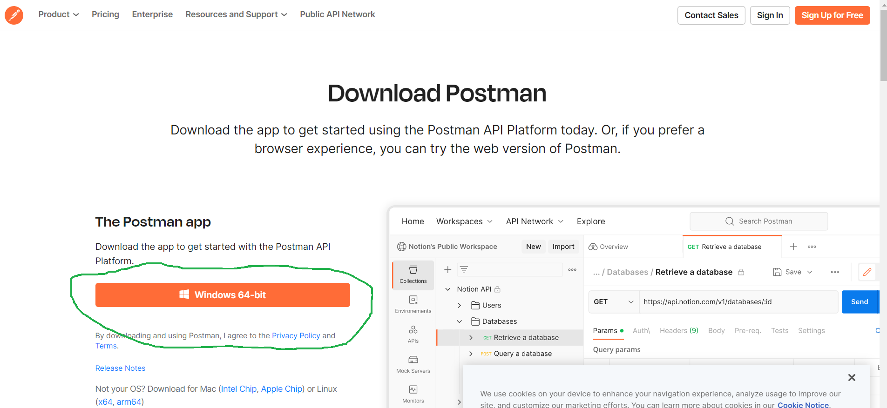
In the apps, copy-paste the url from step 4, and make sure that the option is set to
GET. In this case where the data is monthly, you need to add a parameter of the month data that you want to download in the format of YYYYMM (202308 shown in the example). The parameter is underParamssection. 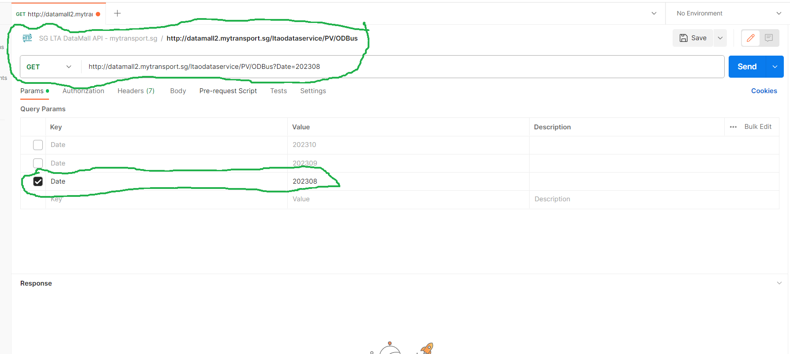Next, go to
Headerssection and add AccountKey which value can be obtained from step 3. Click the blueSendbutton. 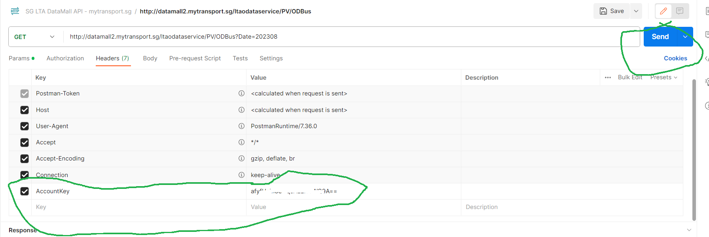Click the link that will come out on the bottom of the apps, it will be opened in a new tab. 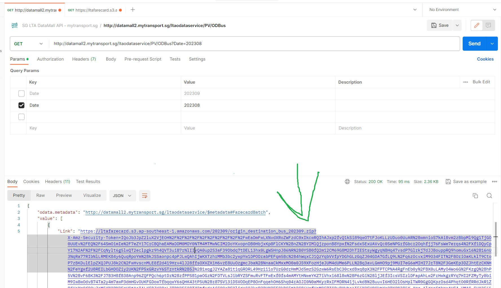
In this last step, click
Send and Downloadin the new tab. You can choose where to put the data and the download will start. 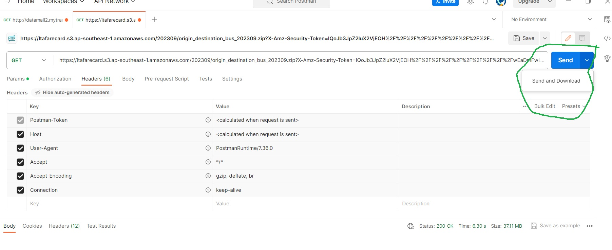
The dataset contains comprehensive information about various Housing and Development Board (HDB) blocks situated in Singapore. The dataset not only includes details on the number and types of dwelling units but also crucially provides the geographic coordinates, specifically the longitudes and latitudes, corresponding to each HDB block. This geographical information opens the door to transforming the dataset into a spatial data frame, enabling us to treat the HDB block details as a spatial object. By leveraging these coordinates, we can engage in spatial analysis and visualization, gaining valuable insights into the spatial distribution and relationships among different HDB blocks across Singapore. This spatial perspective enhances the depth of understanding and opens avenues for exploring the geographical patterns inherent in the HDB block dataset.
Geospatial data in shp format are used in this project, as shown in the following panel:
provides information about all the bus stops currently being serviced by buses, including the bus stop code (identifier) and location coordinates.
downloaded from LTA DataMall - Static Dataset
Columns/Fields in the dataset includes BUS_STOP_N, BUS_ROOF_N, LOC_DESC, and geometry.
metadata
- BUS_STOP_N: The unique identifier for each bus stop.
- BUS_ROOF_N: The identifier for the bus route or roof associated with the bus stop.
- LOC_DESC: Location description providing additional information about the bus stop’s surroundings.
- geometry: The spatial information representing the location of each bus stop as a point in the SVY21 projected coordinate reference system.
provides information about the sub-zone boundary of Urban Redevelopment Authority (URA) Master Plan 2019.
downloaded from Singapore’s National Open Data Collection
Columns/Fields in the dataset includes SUBZONE_N, SUBZONE_C, PLN_AREA_N, PLN_AREA_C, REGION_N, REGION_C, and geometry
While the analysis primarily focuses on hexagon cells, incorporating the Master Planning Sub-Zone 2019 file enables the integration of additional point layers like Retail and Leisure onto the Singapore map. This integration facilitates the visualization of their respective locations within various planning sub-zones across Singapore.
metadata
- SUBZONE_N: The unique name for each subzone boundary.
- SUBZONE_C: The unique identifier for each subzone boundary.
- PLN_AREA_N: The unique name for each planning area.
- PLN_AREA_C: The unique identifier for each planning area
- REGION_N: The unique name for each region.
- REGION_C: The unique identifier for each region.
- geometry: The spatial information representing the location of each subzone boundary in Coordinate Reference System (CRS) from World Geodetic Systems (WGS) 84.
A hexagon layer of 375m (perpendicular distance between the centre of the hexagon and its edges.) Each spatial unit is regular in shape and finer than the Master Plan 2019 Planning Sub-zone GIS data set of URA.
why hexagon?
Uniform Distances Everywhere: Think of hexagons as honeycomb cells. Each cell (hexagon) touches its neighbors at the same distance from its center. It’s like standing in the middle of a room and being the same distance from every wall, making it easier to measure and compare things.
Outlier-Free Shape: Hexagons are like well-rounded polygons without any pointy tips. Sharp corners can create odd spots in data, but hexagons smoothly cover space without sticking out anywhere. This helps prevent weird data spikes that don’t fit the pattern.
Consistent Spatial Relationships: Imagine a beehive where every hexagon is surrounded by others in the same pattern. This regular pattern is great for analyzing data because you can expect the same relationships everywhere, making the data predictable and easier to work with.
Ideal for Non-Perpendicular Features: Real-world features like rivers and roads twist and turn. Squares can be awkward for mapping these, but hexagons, which are more circular, can follow their flow better. This way, a hexagon-based map can mimic the real world more closely than a checkerboard of squares.
Summarized from: Dhuri, and Sekste & Kazakov.
The following dataset will support as propulsive/attractive factors for the modelling. The data was provided by Prof Kam Tin Seong. The data includes:
Business: provide information about business locations across Singapore
Rapid Transit System Station: encompasses the geographical positions of Mass Rapid Transit (MRT) and Light Rail Transit (LRT) stations in Singapore, represented as polygon shapes.
Train Station Exit Layer: includes exit points for all MRT and LRT stations in Singapore, stored as individual points.
Entertainment: highlights the locations of entertainment venues in Singapore, such as cinemas and theaters, presented as points.
Food & Beverage: captures the locations of Food & Beverage venues in Singapore, such as restaurants and cafes, organized as points.
Financial Services: showcases the locations of Financial Services in Singapore, encompassing ATMs, money changers, and banks, stored as individual points.
Leisure & Recreation: denotes the locations of Leisure and Recreation venues in Singapore, spanning sports venues, museums, and galleries, organized as points.
Retails: documents the locations of Retail venues in Singapore, encompassing all shops that may not fit into other categories, presented as points.
2 Preparation
Before starting with the analysis, we have to load the library and import the data. This section also contains minor checking and setup of the data.
2.1 Import Library
The following code chunk utilizing pacman will import the required library (and install it if it does not exist in the environment yet).
pacman::p_load(tmap, sf, tidyverse, sfdep, knitr, Hmisc, mapview, DT, sp, stplanr, reshape2, skimr, performance, plotly, h3jsr, units, httr, corrplot)
Packages Explanations
tmap: Used for creating thematic maps in R, both static and interactive, with extensive mapping capabilities.
sf: Handles and manipulates geospatial data, enabling operations like reading, writing, transforming, and visualizing spatial data.
tidyverse: A suite of R packages designed for data science tasks, including data manipulation, exploration, and visualization.
sfdep: This package provides methods for measuring and diagnosing spatial dependence in linear regression models, particularly when working with spatial econometrics. It is tailored to work with ‘sf’ objects, which are used to handle spatial data in R.
knitr: Allows for dynamic report generation with R, making it easy to integrate R code into reports and weave together narrative text and code output.
Hmisc: Contains many functions useful for data analysis, high-level graphics, utility operations, and functions for dealing with missing values.
mapview: Facilitates the interactive viewing of spatial data in R, built on top of Leaflet.js.
DT: Provides an R interface to the JavaScript library DataTables, useful for creating interactive tables in R markdown documents and Shiny apps.
sp: Provides classes and methods for spatial data, and has been superseded by
sfbut is still widely used for compatibility reasons.stplanr: Offers sustainable transport planning tools for spatial lines, networks, and movement data.
reshape2: An R package that allows you to flexibly reshape data, such as melting and casting data frames.
skimr: Summarizes data in a frictionless way and produces a report with useful summary statistics.
performance: Assesses the quality and performance of statistical models, including checks for assumptions.
plotly: An R package that creates interactive web graphics using the plotly.js library.
h3jsr: Provides an R interface to Uber’s H3 spatial indexing system, allowing for the use of hexagonally-tiled maps.
units: Allows for the symbolic handling of measurement units in R.
httr: Simplifies the process of working with HTTP requests, such as API calls.
corrplot: Visualizes a correlation matrix, making it easier to understand the relationships between multiple variables.
2.2 Import The Data
This section will import the required aspatial and geospatial dataset. The process also involves minor data change before going to more complex data wrangling in the next section.
Aspatial
the following code will import the aspatial data used in this project and check a sample dataframe. The data includes Passenger Volume by Origin Destination Bus Stops and HDB data which explanations can be found in previous section. The process involves:
import the csv file using
read_csvfunction from readr packageusing mutate from dplyr package, transform georeference data type into factors for easing compatibility issue and more efficient processing.
using describe from hmisc package, display the summary statistics of the dataset.
Code
# Load each csv file
odb10 <- read_csv("../data/aspatial/origin_destination_bus_202310.csv.gz")
# change georeference data type into factors
odb10 <- odb10 %>%
mutate(
ORIGIN_PT_CODE = as.factor(ORIGIN_PT_CODE),
DESTINATION_PT_CODE = as.factor(DESTINATION_PT_CODE)
)
# check the dataframe
describe(odb10)odb10
7 Variables 5694297 Observations
--------------------------------------------------------------------------------
YEAR_MONTH
n missing distinct value
5694297 0 1 2023-10
Value 2023-10
Frequency 5694297
Proportion 1
--------------------------------------------------------------------------------
DAY_TYPE
n missing distinct
5694297 0 2
Value WEEKDAY WEEKENDS/HOLIDAY
Frequency 3259419 2434878
Proportion 0.572 0.428
--------------------------------------------------------------------------------
TIME_PER_HOUR
n missing distinct Info Mean Gmd .05 .10
5694297 0 23 0.997 14.04 5.933 6 7
.25 .50 .75 .90 .95
10 14 18 21 22
lowest : 0 1 2 4 5, highest: 19 20 21 22 23
--------------------------------------------------------------------------------
PT_TYPE
n missing distinct value
5694297 0 1 BUS
Value BUS
Frequency 5694297
Proportion 1
--------------------------------------------------------------------------------
ORIGIN_PT_CODE
n missing distinct
5694297 0 5073
lowest : 01012 01013 01019 01029 01039, highest: 99139 99161 99171 99181 99189
--------------------------------------------------------------------------------
DESTINATION_PT_CODE
n missing distinct
5694297 0 5077
lowest : 01012 01013 01019 01029 01039, highest: 99139 99161 99171 99181 99189
--------------------------------------------------------------------------------
TOTAL_TRIPS
n missing distinct Info Mean Gmd .05 .10
5694297 0 3495 0.982 20.76 33.13 1 1
.25 .50 .75 .90 .95
2 4 12 37 73
lowest : 1 2 3 4 5, highest: 30985 31349 32355 35931 36668
--------------------------------------------------------------------------------Geospatial
Setup EPSG Code for all
3 Data Wrangling
3.1 Check for Duplicates
3.2 Aggregate The Data
4 References
Cengel. Introduction to spatial data in R
Coşkun, et al. (2020). Performance Matters on Identification of Origin-Destination Matrix on Geospatial Big Data
Daniels & Mulley. Explaining walking distance to public transport: The dominance of public transport supply
Haynes & Fotheringham (1985). Gravity and Spatial Interaction Models
Kam Tin Seong. 16 Calibrating Spatial Interaction Models with R
Miller (2021). TRAFFIC ANALYSIS ZONE DEFINITION: ISSUES & GUIDANCE
R. Spatial interaction models with R
Sekste and Kazakov. “H3 hexagonal grid: Why we use it for data analysis and visualization”.
Sid Dhuri (2020). “Spatial Data Analysis With Hexagonal Grids”
Tao Ran (2021). Big Spatial Flow Data Analytics. In: Werner, M., Chiang, YY. (eds) Handbook of Big Geospatial Data
Land Transport Authority. Land Transport Data Mall